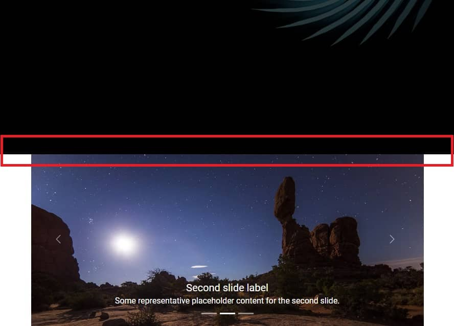

Carousel is a very representative component. It is perfect for presenting various types of media - from photos to videos.
As we know from previous lessons, Tailwind CSS itself does not provide such components, but the TW Elements library does.
Let's learn how to use it in our project.
First, we need to prepare a space where we will place the carousel.
Under the <header> section we have the
<main> section. We'll put a container with
mx-auto class to center it.
Inside the container, let's add a new empty section, and in it we will place a grid with 2 columns.
We will call this section "Details" because it will contain details about our project.
A short reminder from previous lessons:
grid: This is a shorthand for display: grid.
It sets up a new grid container.
lg:grid-cols-2: This is a responsive grid class that sets
up a grid with 2 columns when the viewport is lg (large) or
larger. The lg: prefix in Tailwind CSS stands for "large
screens", and by default it applies to screens wider than 1024px.
This means that for large screens and above, the grid will have 2 columns. For smaller screens (below 1024px), the grid will default to 1 column (if not overridden by other classes) because grid items, by default, stretch to take up the full width of the grid container.
gap-8: This class adds a gutter or gap between your grid
items. The 8 in gap-8 is a spacing scale in
Tailwind CSS which, by default, represents 2rem (32
pixels). This means that there will be a 32-pixel gap between the grid's
rows and columns.
Go to the carousel documentation page and copy the basic example code. Then paste it into the grid in the Details section.
Also, don't forget to initialize the carousel in the
src/js/index.js file:
After saving the file and refreshing your browser, you should see the carousel. You can change the slide by clicking on the arrows on the sides.
Before we get to explaining how the carousel works, we need to fix one little problem.
As you can see the carousel is "touching" our Hero Image and it doesn't look good. A space would be useful there, so we will use the already well-known spacing.
<header>
We already know how to add spacing to any element but there is one more important thing that I wanted to mention by the way.
Note that to add space between the <header> section and
the carousel section, we can add both the bottom margin to
the <header> section and the
top margin to the carousel section and the
visual effect will be the same.
However, if you add a top margin to a section and a bottom margin when creating a core layout, it will create inconsistencies and make it difficult to maintain the design later.
Therefore, it is good practice to choose one method of adding spacing when creating a layout and stick to it.
I recommend you always use the bottom margin when positioning large elements relative to each other and I will do so in these tutorials.
So let's add the class .mb-14 to the
<header> section to add a bottom margin to it.
And by the way, add the .mb-28 class to the
"Details" section, where we have placed our carousel.
id="carouselExampleCaptions"). If you have more than one
carousel in your project and they don't have different IDs, they will
collide with each other and won't work properly.
relative positioning so the absolute-positioned
elements within it (like controls and indicators) will be positioned
relative to this container.
data-te-carousel-init and
data-te-carousel-slide attributes are required so Tailwind
Elements library can apply JavaScript to the carousel and simply make it
works.
As the first child item in the carousel component you can see indicators
These are the little dashes that indicate the active slide. They are interactive and you can click on them to jump directly to the corresponding slide.

How indicators work:
data-te-target="#carouselExampleCaptions" attribute indicates
which carousel the indicators are linked to. In this case, via the
#carouselExampleCaptions mentioned earlier, they point to our
carousel.
data-te-slide-to attributes indicate which slide the
indicator should be linked to. They are zero-indexed, so
first slide = 0, second slide = 1, and so on.
data-te-carousel-active attribute indicates which slide
should be active at start. If you want the second slide to start the
carousel, you have to move this class to the selected slide.
These are our actual slides.
Inside the Carousel items we see Items. Each Item is a single slide.
As with indicators, the active slide contains the
data-te-carousel-active attribute. You can change it if you
want the carousel to start with another active slide by default.
Next you can see the most important actor in this theater - the
<img> element containing the image. In addition, it
contains the block class (display: block) to
ensure that the image displays correctly, and the w-full (width: 100%) class to ensure that the image will stretch to 100% of the width of the
carousel.
Below the image you can see Captions element. With it, you
can add a heading and description to your carousel slides. In addition, it
contains the hidden and md:block classes, which
make the caption disappear on small screens and only appear on medium and
larger screens. This is to prevent unwanted behavior, as on small screens
the caption may completely cover the image.
The last element in the carousel are controls, i.e. buttons - arrows visible on the sides of the slides. They are, of course, used to switch between one slide and the next.

Just like indicators, they use the
data-te-target="#carouselExampleCaptions" attribute to indicate
which carousel they should be connected to.
Other than that, the rest of the classes and attributes should not be modified, as they are required exactly as they are to ensure proper work of controls.
And that's all the most important information about the carousel. If you want, you can change the photos and caption in your project to what you like. You can also experiment with the carousel and see more options available on the carousel documentation page.
When you are ready, click the "next" button to go to the next lesson.
.jpg)
.jpg)
.jpg)